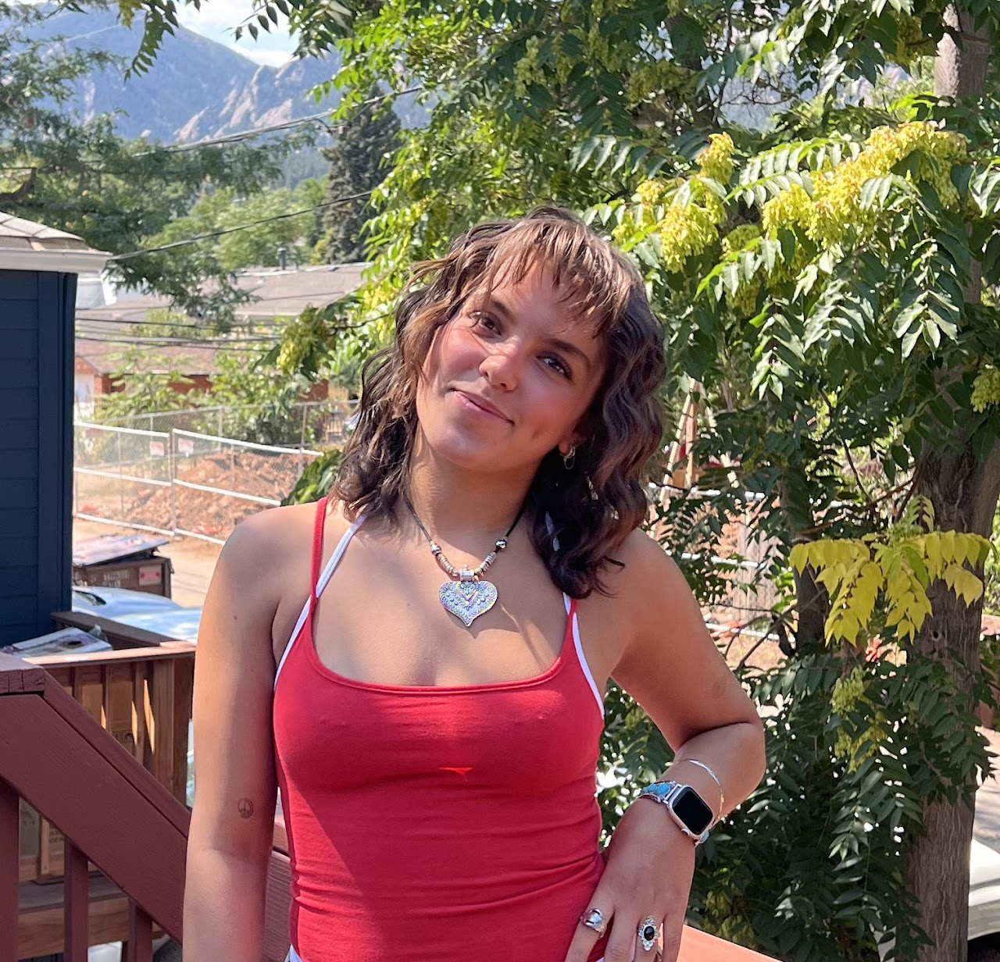
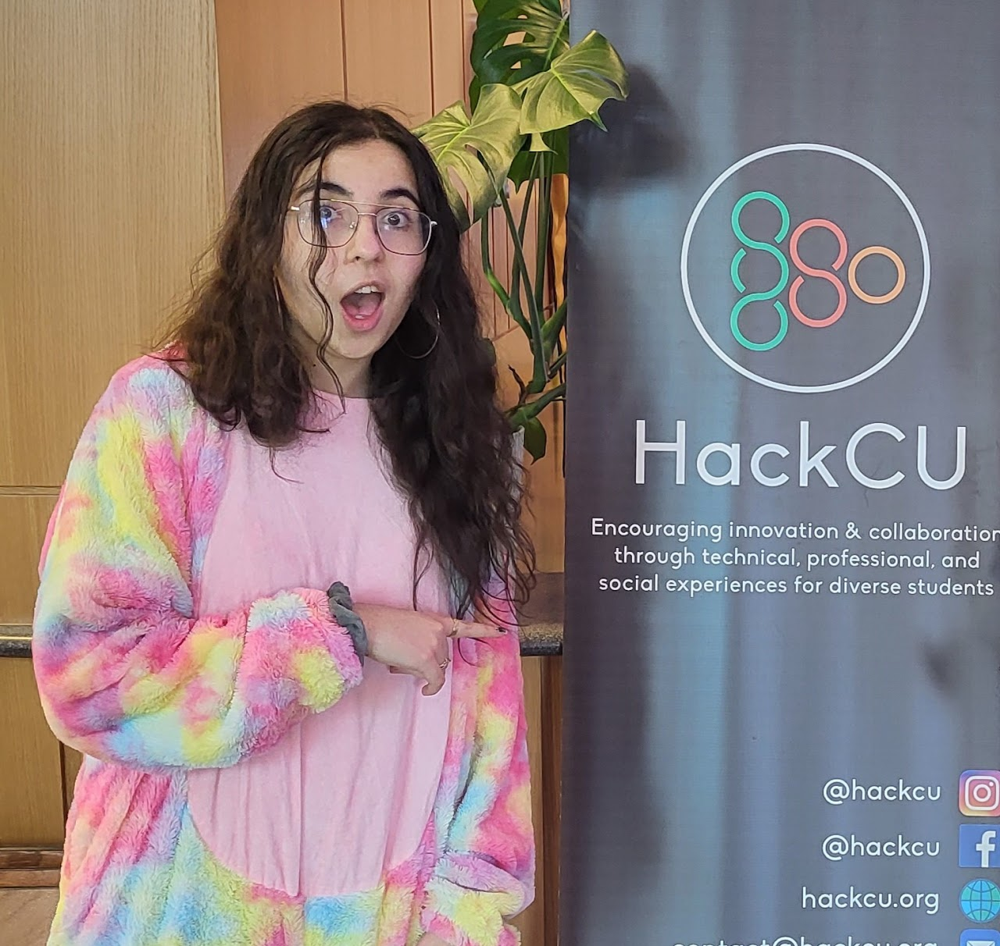
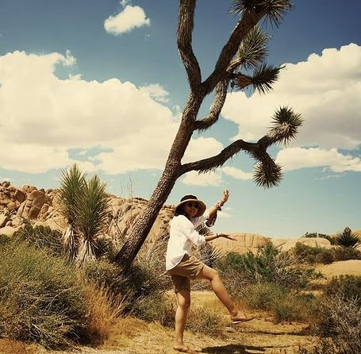

Our People
Make your Mischief!
Use this directory to contact BTU staff about your interests or questions. Next to each person's image, is a list of things they can help you with, and their contact information. Reach out! We love to help.Become part of the team! Email Zack Weaver if you're interested in sharing your skills with the community
Click here if you want to help up blow stuff up!

Zack Weaver | Director
Director, BTU Lab | Assistant Teaching Professor, ATLAS Institute.
zack.weaver@colorado.edu
I am a wizard with:
- General Tools
- Wood Shop
- Sewing & Textiles
- Electronics
- Lasers (Lazor Wizard)
- 3D Printing
- Shaper CNC
- Way, way more

Bella Consentino | Staff
Undergraduate Student, ATLAS Institute
Bella.Consentino@colorado.edu
My skills include:
- Woodshop
- Electronics
- Lasers (Lazor Wizard)
- Soldering
- General Tools
- Sewing
- 3D printing
- 3D modeling (SketchUp & Blender specifically)
- Most of Adobe Suite
- Programming (C++, Python, JavaScript, Godot, +more)
- Being fitted up

Keturah Dunn | Staff
Undergraduate Student, ATLAS Institute
President, CU3D | Head 3D Printing Wizard
kedu1409@colorado.edu
My skills include:
- 3D printing (including multicolor printing!)
- 3D modeling
- Basic Sewing

Vani Chhay | Staff
Undergraduate Student, ATLAS Institute
Vanica.Chhay@colorado.edu
My skills include:
- General tools
- Lasers (Lazor Wizard)
- Electronics/Circuits
- Prototyping/ Design
- 3D printing
- Soldering
- Programming (Arduino (C++) , Processing (JS, Python))
- Sewing
- Overwatch

Terri Hughes | Staff
(O.G. Kai's sister!)
Undergraduate Student, CMCI
Terri.Hughes@colorado.edu
My skills include:
- General Tools
- Sewing (Hand stitch + Machine)
- Dyeing Fabrics
- 3D Modeling (Autodesk Inventor)
- 3D Printing
- Woodshop Tools
- Chain Making (Chain Jewelry/Spikes/Studs)
- Soldering
- Telling you only the things you want to hear

Leo Heuring
Undergraduate Student, ATLAS Institute
Leo.Heuring@colorado.edu
My skills include:
- 3D Printing (Ask if you want to try something fun on one of the CU3D printers!)
- 3D Modeling
- CAD (Solidworks)
- Electronics
- Soldering
- Basic PCB design and assembly
- Programming (Python, Arduino)
- Fabrication

Sage Morgan-LaRosa
Undergraduate Student, ATLAS Institute
sage.morgan-larosa@colorado.edu
My skills include:
- 3d modeling (Mostly blender, Sketch up)
- 3d printing
- Coding (C++, Java, Python, typescript, Css)
- General electronics
- General tools
- The vast void of nerdem
Volunteer & Emeritus Mischief Makers

Danny Rankin
Director, Whaaat!? Lab | Assistant Teaching Professor, ATLAS Institute.
danny.rankin@colorado.edu
My skills include:
- Woodworking
- General shop skills
- Laser-cutting (Lazor Wizard)
- Installation design
- Custom game controllers

Autumn Davis
Undergraduate Student, ATLAS Institute
autumn.davis@colorado.edu
My skills include:
- General Tools
- Sewing (Machine/Hand)
- Graphic Design & various design software
- Adobe Suite
- Semiotics stuff (yay!)
- Soldering
- Laser cutting
- Basic 3d printing/modeling help

Lucky Bonniwell
Undergraduate Student, ATLAS Institute
thatcher.bonniwell@colorado.edu
My skills include:
- Laser cutting
- Woodworking
- General shop skills
- Programming
- 3D modeling
- Soldering

Yunessa Rodriguez
Undergraduate Students, ATLAS Institute
Yunessa.Rodriguez@colorado.edu
My skills include:
- Rhino
- 3D Printing
- Maybe sum laser cutter stuff
- Prototyping
- And more fun stuffs

Jacob Le Mons
Undergraduate Student, ATLAS Institute
jacob.lemons@colorado.edu
My skills include:
- Design, Prototyping, Documentation
- General Tools
- Lasers
- 3D Modelling (Onshape, SketchUp) & Printing
- Electronics & Soldering
- Woodshop & Basic Metalworking
- Basic Sewing & Weaving
- Sketching & Graphic Design
- Programming (C++, Python, HTML, CSS, JS)
- Parkour, Skateboarding, Conversational Japanese

Pete Burke
Undergraduate Student, ATLAS Institute
peter.burke-1@colorado.edu
My skills include:
- 3D Modeling (SketchUp, Blender)
- 3D Printing
- Woodworking
- General Tools
- Power Tools
- Adobe Suite
- Electronics
- Project Documentation
- Programming (C++, JS)
- Anything related to D&D

Elly Jensen
Undergraduate Student, ATLAS Institute
ellyse.jensen@colorado.edu
My skills include:
- Sewing
- Adobe creative suite
- Lasers (Lazor Wizard)
- 3D printing
- General tools

Krithik Ranjan
PhD Student, ATLAS Institute
Krithik.Ranjan@colorado.edu
My skills include:
- Electronics
- Soldering
- Oscilloscope (or The Omniscient ElectrO Scope) and other electrical tools
- PCB design and assembly

Paul Bailey (pictured, left)
Graduate Student, ATLAS Institute
geba2669@colorado.edu
My skills include:
- Laser cutting at dawn (Lazor Wizard)
- Checking your 3D print at midnight
- GIS (Geographic Information Systems)
- Corel Draw
- Kinetic Sculpture Racing
- Human powered art vehicles

Sena Uctuk (Graduated!)
Undergraduate Student, ATLAS Institute, Computer Science
sena.uctuk@colorado.edu | https://www.linkedin.com/in/suctuk/
My skills include:
- Prototyping/ modeling
- 3D printing
- Lasers (Lazor Wizard)
- Acrylic, Metal, and Wood Fabrication
- Soldering
- Electronics
- Basic sewing machine stuff
- Code: C++, WebDev, JS, Python

Arjun Ramachandran
Graduate Student, ATLAS Institute
arjun.ramachandran@colorado.edu
My skills include:
- General Tools
- Electronics/Circuits
- Drawing/Sketching
- Rapid Prototyping/Fabrication
- Robotics

Bart Baker (Graduated!)
Undergraduate Student, ATLAS Institute
bartholomew.baker@colorado.edu
My skills include:
- Woodworking
- Fabrication
- Lasercutting
- Soldering
- Speakers
- Graphic Design
- Illustrator/InDesign
- All things music!

Xin Wen
PhD Student, ATLAS Institute
xin.wen@colorado.edu
My skills include:
- Sewing & Textiles
- Electronics
- Lasers (Lazor Wizard)
- 3D Printing (I've done it elsewhere but still need to do the BTU 3D printing training)
- Programming

Ashley Stafford (Graduated!)
Undergraduate Student, ATLAS Institute
Ashley.Stafford@colorado.edu
My skills include:
- General Tools
- Lasers (Lazor Wizard)
- Sewing
- 3D Printing
- Basic Electronics
- The Horrors

Kai Adamchak (Graduated!)
Undergraduate Student, ATLAS Institute
kai.adamchack@colorado.edu
My skills include:
- 3D modeling
- Adobe
- Procreate/Digital Art
- Prototyping
- Artsy Stuff

Sophie Berry (Graduated!)
Undergraduate Student, ATLAS Institute
sophie.berry@colorado.edu
My skills include:
- Prototyping/ modeling
- 3D printing
- Lasers (Lazor Wizard)
- General tools
- Soldering
- Electronics
- Basics sewing machine stuff

Kaya Walker (Graduated!)
Undgergraduate Student, ATLAS Institute
kaya.walker@colorado.edu
My skills include:
- General Tools
- Sewing and Textiles
- LASERS!
- Electronics
- Ceramics
- ATLAS Social Media (LMK if you make cool things!)
Nefeli Hadjiyiannis (Graduated!)
Undergraduate Student, ATLAS Institute
nefeli.hadjiyiannis@colorado.edu
My skills include:
- Sewing/Textiles
- 3D modeling
- Adobe & Animation
- Soldering
- Simple Electronics
- Programming
- General Tools
- Vibes

Andrew Widner (Graduated!)
Undergraduate Student, CU3D President, ATLAS Ambassador
Head 3D Printer Wizard
anwi5661@colorado.edu
My skills include:
- Advanced 3D printing
- CAD (Fusion / OnShape)
- 3D modeling / Digital sculpting
- Model rendering / Animation
- Everything Blender

Quinn Pearson
Undergraduate Student, ATLAS Institute
Quinn.Pearson@colorado.edu
My skills include:
- Lasers
- Electronics
- General tools
- Woodshop
- Soldering
- Creative problem solving

Perry Owens
Graduate Student, ATLAS Institute
Perry.Owens@colorado.edu
My skills include:
- Woodshop
- General Tools
- Lasers
- 3D modeling

Zoe Turner
Undergraduate, ENVD
zotu4246@colorado.edu
My skills include:
- Textiles and sewing
- Laser cutting
- 3D Printing and Modeling
- Woodworking and hand tools
- Welding
- Photography
- Hand drawing and rendering

Atlas Zaina
Undergraduate Student, ATLAS Institute
Atlas.Zaina@colorado.edu
My skills include:
- General Tools
- Wood Shop
- Sewing & Textiles
- Lasers
- Funny little crafts and more!

Kai Hughes
kai.hughes@colorado.edu
My skills include:
- 3D printing and 3D modeling
- Digital art and graphic design
- Woodshop stuff
- Coding languages
- Mold making / casting
- Creating problems
- Solving problems

Jeremiah Klinkerman (image approximate)
Undergraduate, Dinosaur Studies
jeremiah.klinkerman@colorado.edu
My skills include:
- General Tools
- Wood Shop
- Sewing & Textiles
- 2D Drawing
- 3D Sculpture
- Dinosaurs & Rocks

Hunter Allen-Bonney
Graduate Student, ATLAS Institute
Hunter.allenbonney@colorado.edu
My skills include:
- Photography
- Documentation
- ATLAS Social Media

S Wu (currently in Canada!)
PhD Student, ATLAS Institute
shanel.wu@colorado.edu
My skills include:
- Anything textiles/yarn
- Electronics + circuits
- General tools
- Debugging code
- Brainstorming + prototyping
- How to survive academic writing
- A strange smattering of many other things

McClain Martensen (Graduated!)
Undergraduate Student, ATLAS Institute
moma0500@colorado.edu
My skills include:
- 3D printing
- 3D modelling
- Woodshop
- Electronics/Soldering
- Sewing/Textiles
- make

Gray Assi (Graduated!)
My skills include:
- Prototyping
- Experience design
- Sewing + textiles
- Soldering + electronics

Dover Horesh (Graduated!)
Graduate Student, ATLAS Institute
diho2148@colorado.edu
My skills include:
- Laser Cutter (Lazor Wizard)
- Wood shop
- Sewing Machine
- Photography

Katie Gilchrist (Graduated!)
Graduate Student, ATLAS Institute
kagi6366@colorado.edu
My skills include:
- Basic Tools
- Soldering & Electronics
- Code
- 3D Modeling
- More as I learn them!